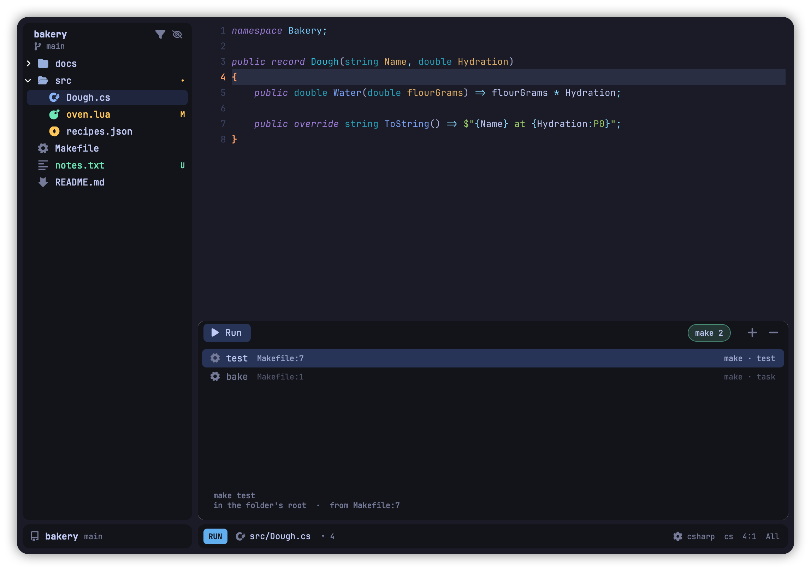
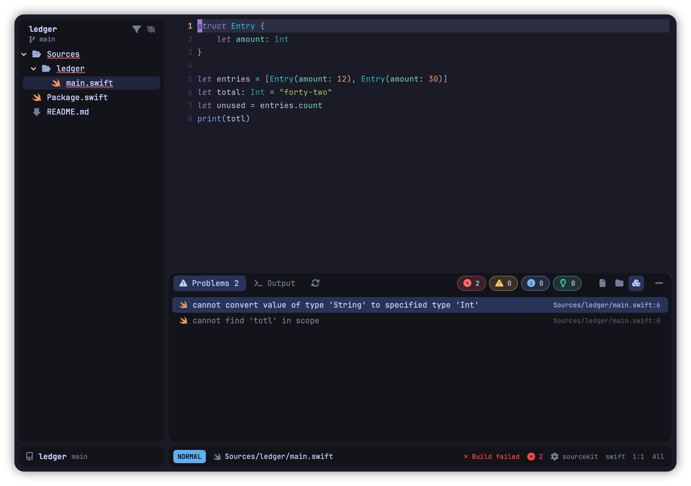
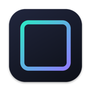

Neovim, with the IDE parts.
Fast.
A native Mac IDE around Neovim: Metal-rendered, non-blocking, opinionated and working out of the box, and still Neovim all the way down.
$ brew install --cask optionull/tap/trimmacOS 15 or later, Apple silicon. Installs Trim and Shim, and Neovim if you need it.

Built so nothing waits on anything.
Speed is the point. Editing is always instant, and everything that can be slow happens somewhere else.
The text is drawn by Metal
The editor grid is a Metal renderer, and terminal panes are Ghostty's, also Metal. Everything around them is plain AppKit: no web view, no Electron, no second runtime to keep warm.
Work happens elsewhere
Neovim, each language server and each build run as their own processes. Git, the file tree, filtering and diagnostics are read off the main thread, and a build runs unseen and only comes forward when it has something to say.
Opening a file never waits
The keyboard is in the editor before Neovim has finished reading the file. Big files, and files with enormous lines, open plain: no tree-sitter, folds, undo history or language server, so they are quick.
One idea, used everywhere.
Anything that takes the keyboard is a mode with a name in the status bar, and Escape always goes back to where you came from. No dialogs, no panels you have to find the mouse for.
And INSERT, VISUAL, COMMAND: Neovim's own modes, untouched.
The file tree, with git marks and diagnostics. ⇧⌘E
Narrow the tree, or any list, as you type. /
Jump between repositories and worktrees. ⌘⇧O
The list of open files. ⌥⌘E
Files by name, ranked as you type. ⌘P
Text in files, with git grep. ⇧⌘F
Each one tried live as you move. ⌥⌘T
Every monospaced family, tried live. \F
Bundled and installable plugins. \P
Everything the folder can run, in tabs. ⇧⌘R
Output and Problems of a build. ⇧⌘B
Run anything the folder offers.
F5 runs, ⇧⌘R chooses. Trim reads what the folder can run and never builds to find out.
- Read, not guessed: .NET, Swift and Rust projects, Makefiles, mise tasks, justfiles, npm scripts, VS Code tasks and launches.
- Pills by origin filter the list: make, npm, dotnet, VS Code, and your own.
- Your own configurations: copy any entry, change its arguments, folder and environment, kept out of your repository.


Output in a tab each.
A real terminal, Ghostty's, beside or under the code. The keyboard stays in the editor until you ask for the pane.
- Exit status in the header, and a button to run it again in the same tab.
- Several at once, up to eight, a tab each.
- Resizable, and remembered.
Builds that tell you only what matters.
⇧⌘B builds the folder. It runs unseen: a loader in the status bar, and the pane comes forward on its Problems tab only when there is an error or a warning.
- One Problems list for the whole workspace: language server diagnostics of every file, and what the last build printed.
- Parses what your tools print: MSBuild, tsc, swiftc, clang, gcc and rustc, down to the line.
- A clean build is one line in the status bar that goes away.
- Files with problems get a wavy line in the tree, and so do the folders above them.

Real servers, on real codebases.
Go to definition, usages, completion and documentation, drawn by the window and never fighting each other for room. These are Trim on large public projects, with each language's own server.
Also: F# (fsautocomplete), HTML, CSS, JSON and Markdown, and any server your own config starts. Servers start from your project files, restart when they crash, and are isolated from the editor.
Works the moment you open a folder. Bends as far as Neovim does.
Decisions already made
tokyonight, a good monospaced font and its icons, which-key, pairs, surround and git signs, language servers found or installed for you and started from your project files, sensible keys on the leader. Open a folder and work.
An isolated Neovim config, so nothing in ~/.config/nvim can break it, and it cannot break yours.
It is Neovim
Your additions go in ~/.config/trim/init.lua and win over every default. Any plugin, your own vim.lsp.config, your own keys: each of Trim's modes is a <Plug> mapping you can rebind.
Want your whole config instead? That is what Shim is for.

And Shim, for the single file
Shim is Neovim alone in a native window with your own config: no tree, no panels, instant. Open it for the file you want to edit now, and switch between your Neovim configs from a menu. It installs with Trim.
Install
$ brew install --cask optionull/tap/trimTrim is one of optionull's small, native, open-source Mac apps.